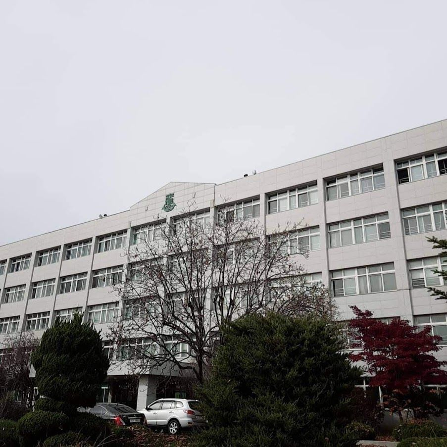

우신고등학교 (宇信高等學校, Wooshin High School)는 서울특별시 구로구 수궁동에 위치한 일반계 고등학교이자 남자고등학교이다. 2010학년도부터 2015학년도까지는 자율형 사립고등학교였으나, 재정난으로 인해 2016학년도부터는 다시 일반계 고등학교로 환원되었다.
우신중학교와 같은 재단인 우천학원 소속이며, 우신중학교는 고등학교 본관 건물 뒤에 있다. 같은 재단 소속이며 한 울타리 안에 있기 때문인지 우신중학교의 교장과 우신고등학교의 교장을 겸임한 선생님도 있다.